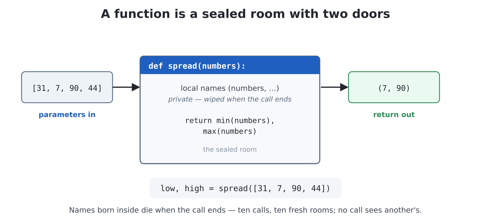

From the first print("I am alive!") you have been giving
orders in a language somebody else stocked: beep,
len, input, t.forward. This
chapter hands you the stockroom keys. A function is a
command you define — named, reusable, parameterised — and the
moment you can make your own, programs stop being scripts and start
being built.
The chapter in advance, since this idea carries as much weight as chapter 10’s:
def teaches the machine a new command;
calling it runs it.square(50), square(120).return makes functions that
answer rather than act.import, and chapter 9’s flower is
rebuilt in four lines.def:
teaching, then tellingedit("learn.py"):
def fanfare():
beep(440, 200)
beep(550, 200)
beep(660, 400)
print("Ta-da!")
print("Presenting...")
fanfare()
print("And once more!")
fanfare()Two new things and one enormous idea. def fanfare():
defines a command called fanfare — the
indented block beneath is what it means, exactly as chapter 5 wrote it
out longhand. Then fanfare() — the name with brackets —
calls it: run my block, then come back here.
The enormous idea is the timing. When Python reads the
def, nothing beeps. Definition is teaching, not
doing — the machine just files the recipe under the name. Only the
call cooks. Run the program and read its output against the
source until that ordering feels natural: one definition, two
performances.
Coming from MMBasic:
defisSUB ... END SUB(theEND SUBbeing, as ever, the dedent), a call needs noCALL, and — coming shortly — Python makes noSUB/FUNCTIONdistinction: one keyword covers both.
In one line: def name(): files a recipe;
name() cooks it; nothing happens until the call.
Chapter 9’s square was always 100 pixels. Compare:
def square(t, size):
for _ in range(4):
t.forward(size)
t.right(90)
t = Turtle()
t.reset()
square(t, 40)
square(t, 80)
square(t, 160)t and size are parameters
— variables that belong to the function and are filled in fresh at every
call, from the values (the arguments) in the caller’s
brackets, matched up left to right. One definition, an infinity of
squares. This is the pattern of every command you have ever called:
beep(440, 200) was filling in somebody else’s
freq and ms all along.
(Why pass the turtle in as t? So the function works on
any turtle it is handed, rather than reaching for one
particular turtle by name — the sealed-room section below makes this
precise.)
Two refinements you have already used and can now make. A parameter can carry a default, used when the caller doesn’t say:
def polygon(t, sides, size=60):
for _ in range(sides):
t.forward(size)
t.right(360 / sides)
polygon(t, 6) # a hexagon, default size
polygon(t, 3, 200) # a big triangle— which is exactly why beep() works bare (its definition
says freq=880, ms=150) and t.right() turns 90.
And arguments can be given by name, which reads
beautifully when there are several:
polygon(t, sides=8, size=45). You met this as
sort(reverse=True) and
plot(readings, style="bar") — keyword arguments,
demystified.
In one line: parameters make a function general; defaults make it polite; naming arguments makes calls readable.
return: functions that
answerfanfare and square act. The other
half of the family answers — they hand a value back to whoever
called, with return:
def dog_years(age):
return age * 7
print(dog_years(6))
oldest = dog_years(15)A call with a return behind it is an expression
— it can sit anywhere a value sits: inside a print, on the
right of an =, inside another call. You have leaned on this
shape all book: len(name), int(input(...)),
random.randint(1, 5) are all functions answering.
Now the confusion to kill early, because it catches everyone:
return is not print.
print shows a value to a human and hands back
nothing; return hands a value to code and shows
nothing. A function that prints its result cannot be used in arithmetic;
a function that returns it can do both — the caller decides whether to
print. When in doubt, return.
Functions can return early (handy for verdicts), and — chapter 10 cashing in — can return several things as a tuple, unpacked on arrival:
def spread(numbers):
return min(numbers), max(numbers)
low, high = spread([31, 7, 90, 44])(min and max are built-ins that do what
they say — meet them properly in appendix E.)
In one line: return hands a value back to the
caller; print is for people, return is for code.
Type this and predict the last line before running it:
def experiment():
inside = 99
experiment()
print(inside)NameError: name 'inside' isn't defined. The variable
born inside the function died when the function finished.
Parameters and any names a function assigns are local —
chalk marks on the inside of a sealed room, wiped when the call ends.
Ten calls, ten fresh rooms; no call can see another’s chalk.
This is a feature of the first rank. It means you can write a
function using whatever throwaway names you like (i,
total, size) with a guarantee it cannot
trample your program’s variables — nor your program its. It is
why a library written by a stranger is safe to import. The room
has exactly two doors, both of which you control: parameters carry
values in, return carries answers out.
(For completeness: a function may read an outside name it
never assigns — that is why square could have used a global
turtle. Prefer the doors anyway; functions that name their needs in
their parameter list can be read, tested and reused without archaeology.
Python does have a global escape hatch; this book will not
be needing it for a long while.)
Coming from MMBasic: the default has flipped. In MMBasic a SUB sees the program’s variables unless it says
LOCAL; in Python everything a function assigns is local unless it goes out of its way. The Python default is the one you would have chosen with hindsight —LOCALeverywhere, enforced by the language.
In one line: names made in a function live and die there; pass in
through parameters, hand back through return.

Watch what functions do to the flower. Before — chapter 9’s nested loops; after:
def polygon(t, sides, size=60):
for _ in range(sides):
t.forward(size)
t.right(360 / sides)
def flower(t, petals, size):
for _ in range(petals):
polygon(t, 4, size)
t.right(360 / petals)
t = Turtle()
t.reset()
t.pencolor(MAGENTA)
flower(t, 12, 70)Read flower aloud: petals times — draw a square,
turn a petal’s worth. The nested loop is still there, but the inner
one now has a name, and the name does the explaining.
Functions calling functions is how small ideas compose into big ones —
and notice flower doesn’t know how polygon
walks, only what it achieves. You will feel the full force of
this in Part IV, when update_aliens() and
draw_score() make a game loop read like a story.
The functions above are too good to belong to one program. Any
.py file is a module — the same mechanism
as math and random — and import
will fetch yours by filename. edit("shapes.py"):
# shapes.py -- turtle shape library. import shapes; shapes.star(t,
# 5, 100)
def polygon(t, sides, size=60):
for _ in range(sides):
t.forward(size)
t.right(360 / sides)
def star(t, points, size=100):
for _ in range(points):
t.forward(size)
t.right(180 - 180 / points)
def flower(t, petals, size=60):
for _ in range(petals):
polygon(t, 4, size)
t.right(360 / petals)
def burst(t, spokes, size=80):
for _ in range(spokes):
t.forward(size)
t.back(size)
t.right(360 / spokes)(One upgrade smuggled in: star now computes its own
angle — 180 - 180/points closes a star for any odd number
of points; try proving that with chapter 9’s turning-total argument.
Also note the comment on line 1 saying what the file is and how to use
it: the first line of every library you write deserves this.)
Now a gallery program that uses it —
edit("gallery.py"):
import shapes
t = Turtle()
t.reset()
t.pencolor(YELLOW)
shapes.star(t, 7, 90)
t.penup(); t.goto(120, 120); t.pendown()
t.pencolor(CYAN)
shapes.flower(t, 9, 40)
t.penup(); t.goto(520, 360); t.pendown()
t.pencolor(RED)
shapes.burst(t, 24, 60)import shapes reads your file once and serves its
functions under the shapes. prefix — exactly
math.sqrt’s arrangement, now that you have seen behind the
curtain. (from shapes import star, flower imports chosen
names without the prefix — handy in small programs; the
prefixed form scales better once several libraries are in play.)
You will see MicroPython code that writes functions like this:
def area(width: int, height: int) -> float:
return width * heightThe : int and -> float are type
hints — notes about what each parameter expects and what the
function hands back. For an ordinary function MicroPython
ignores them while the program runs (exactly as desktop Python
does): they are documentation, for human readers and for tools, not
rules the machine enforces — area("a", "b") still fails
only when the * gives up, not at the door. They earn their
keep in two ways. First, they make a function’s contract obvious when
you are reading — or debugging — code, your own included. Second, and
less obviously, the speed-up decorators of chapter 35
(@micropython.viper above all) read them as real
type declarations and use them to generate fast machine code. Optional
everywhere else; a good habit once functions grow.
import looksNotice what import shapes does not say: where
the file is. An import names a module, never a path —
import "/sd/shapes.py" is a SyntaxError, quotes, slashes
and all. Instead, Python keeps a list of folders it searches, and you
can inspect it:
>>> import sys
>>> print(sys.path)
['', '.frozen', '/lib']Three entries, each worth knowing:
'' — the current folder. For you this
is better than it looks: run() always moves into the
program’s own folder while it runs, so a library sitting next to
your program is always found — flash or SD card alike. A game on
/sd/games finds its shapes.py neighbour with
no arrangements at all; program and libraries travel together, and
copying the folder copies the lot..frozen — inside the firmware. The
system’s own modules (pye, the shell, the sprite engine…)
are baked in here. Nothing to manage; just know the name so the list
doesn’t look mysterious./lib — the machine-wide shelf. A
folder on the flash drive searched from anywhere:
cp("shapes.py", "/lib") and every program on the machine
can import shapes, no neighbouring required.Python walks that list in order, stopping at the first
match — your program’s folder, then .frozen, then
/lib. So a shapes.py sitting beside your
program shadows one on the /lib shelf: handy when
a project wants its own tweaked copy, a trap on the day you forget an
old neighbour is hiding the shelf version you meant to use.
The list is a plain list — chapter 10 applies — so you can put more shelves on it:
>>> sys.path.append("/sd/mylibs")From then on (until the next reset) imports also search that folder.
To make it permanent, put it in /boot.py —
main.py’s quieter sibling from chapter 5, which runs at
every start-up, before anything else:
# /boot.py -- runs before any program, at every start-up
import sys
sys.path.append("/sd/mylibs")One caution before you build your library empire on the SD card: the
card is removable, and a shelf that vanishes mid-project makes for
puzzling ImportErrors. The reliable homes are the two that
are always there: next to the program, and /lib on
flash.
You have written your own modules, and the machine came with dozens
frozen in. There is a third shelf, and it is vast: the libraries other
people have written and shared. MicroPython has an installer for exactly
this — mip, the small cousin of the
pip you may have heard of. Given Wi-Fi (chapter 30), one
line fetches a library from the internet and files it under
/lib, ready to import:
>>> import mip
>>> # a fuller date/time library, from micropython-lib
>>> mip.install("datetime")That is the whole idea; the craft of it — where the good
libraries live, how to tell a sound one from a shaky one, and how to
wire one to real hardware — earns a chapter of its own later on
(chapter 33). Note only that, unlike the shell commands
and run(), none of this is Pico Computer 3 specific:
mip, /lib and import work the
same on every MicroPython board, so a library you learn to install here
you can install anywhere.
One more thing before the chapter closes, worth meeting today rather
than mid-project: Python reads a module once per
session and keeps it cached — if you edit
shapes.py, a re-run of gallery.py
still sees the old version. Press Ctrl-D at
the prompt (a “soft reset” — the machine restarts Python itself, in a
second, files untouched) and run again: edits picked up. Edit library,
Ctrl-D, run — let it become a reflex.
This is the exception chapter 5 hinted at when it called each run
only fresh-ish. Your program’s own variables really do vanish
between runs; but an import is cached one level deeper — in
the interpreter, not in your program — so it outlives them. The same
soft reset (Ctrl-D) clears both.
def name(parameters): files a recipe;
name(arguments) cooks it, matching arguments to parameters
left to right. Nothing runs at definition time.size=60) make arguments
optional; keyword arguments
(polygon(t, sides=8)) make calls readable — and both now
explain every API you have used.return hands a value to the caller; a
returning call sits anywhere a value sits. Print is for people, return
is for code. Tuples let one call answer with several values.return out. (MMBasic
users: the LOCAL default just flipped, in your
favour.).py file is a module:
import shapes serves your own functions like
math serves sqrt. Imports take names, not
paths — the search list is sys.path ('' = the
running program’s own folder, /lib = the machine-wide
shelf, and sys.path.append adds more). After editing a
library, Ctrl-D then run.fanfare a notes parameter and play a
scale: for over range(notes) raising the
frequency each beep. Then give it a default.print(fanfare()) print
after the ta-da? (Every function returns something — the
no-answer answer is called None, and now you have seen
it.)c_to_f(c) returning the Fahrenheit conversion
from chapter 6, and use it three ways: in a print, in an
if (frost warning), and to build a table with a loop. One
return, three careers.square assign
size = 999 inside, and print size before and
after calling it from a program that also has a size. Whose
survives? Why?ring(t, n, size) to the library — n
small circles (t.circle) around a centre,
push()/pop() to come home each time. Then
Ctrl-D, and see it appear in the gallery.ask(a, b) returns
True/False for one question, drill(n) runs n
of them returning the score, and the top level is two lines. Same
behaviour, new architecture — diff the feeling.card(name, tune) prints a framed card (chapter 5’s
= borders as a frame(text) helper) and plays
one of several tunes by name — a dictionary of tunes, chapter 10 style,
where each value is a function. (Yes, functions can live in
collections. Sit with that one.)house(t, x, y, size) —
walls, roof, door, all polygons, everything scaled from
size. Then a street of houses in a loop, sizes from
random.randint. Composition all the way down: scene calls
house calls polygon calls forward.play(low, high) returning the number of tries,
then write a tournament program: three rounds,
hiscore.py-style table of results. Two of your programs,
meeting through an import.